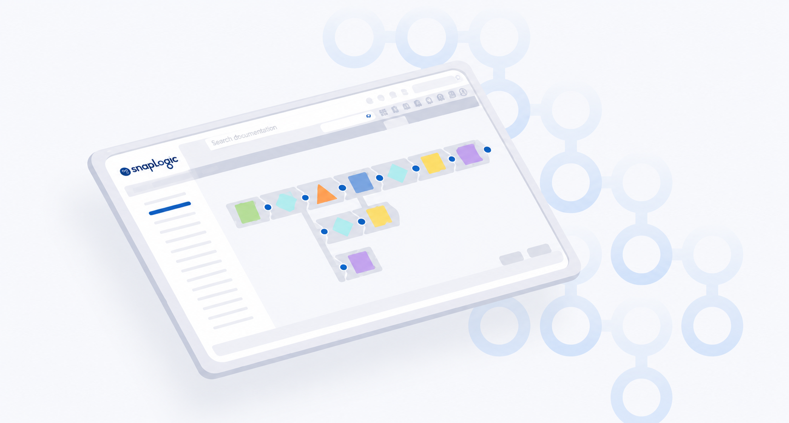

Learn about how SnapLogic products can accelerate modernization and integrate data to satisfy your business goals. Choose your learning path by feature or by what you want to accomplish.

Automate data synchronization from multiple sources to popular cloud data warehouses with a point-and-click interface.
Learn more →Build, configure, and manage integration pipelines with a visual drag-and-drop interface.
Learn more →Leverage generative AI to build, analyze, and refine SnapLogic pipelines directly in Designer.
Learn more →Configure your SnapLogic environment, manage users and security, and maintain runtime infrastructure from a single administration console.
Learn more →Leverage generative AI to build, analyze, and refine SnapLogic pipelines directly in Designer.
Learn more →Track pipeline executions, monitor infrastructure health, manage notifications, and gain insights into your SnapLogic environment.
Learn more →